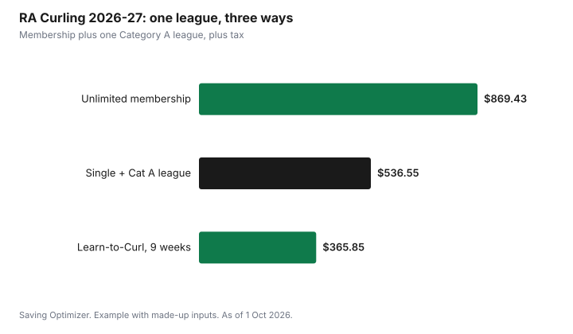

Sports · Canada
Curling Club Memberships: A Canadian Cost Guide

Curling costs come in two parts at most clubs: a membership and a fee for each league you play in. At the RA Centre in Ottawa, for example, a 2026-27 Single League membership is $267.18 plus tax, and a Category A league adds $269.37 plus tax, so one evening league costs about $536 before tax. Beginners usually start with a learn-to-curl program instead; the RA's 9-week program for adults 18 and older is listed at $365.85 plus tax and lends sliders, grippers, stabilizers and brooms. Every club sets its own fees, so use the checklist below to compare.
Key takeaways
- Most clubs charge a membership plus per-league fees; check whether a fee includes league play.
- RA Centre 2026-27: Single League membership $267.18 plus tax, plus league fees.
- Unlimited membership at the RA ($869.43) has no additional league fees.
- Learn-to-curl at the RA: 9 weeks, adults 18+, club equipment provided, listed at $365.85 plus tax.
- Start-up gear can stay small: shoes or a slider and gripper, and later a broom.
- Example with made-up inputs: a first season costs $640 including gear.
Fees
The RA Curling Club's 2026-27 season runs from Monday, 5 October 2026 to Friday, 9 April 2027. Its fees include a 9.5% facility renewal fee, shown separately, and are listed plus tax. You choose a base membership by how many leagues you want each week, then register for leagues. The club says you must buy the membership before registering for any league.
| Membership | Leagues | Fee | League fees |
|---|---|---|---|
| Single League | 1 | $267.18 | Extra |
| Multi-league | 2 to 3 | $398.58 | Extra |
| Unlimited | 4 or more | $869.43 | None |
| Student (full-time, 14+) | 1 to 2 | $215.72 | Extra |
| Youth | Youth league and program | $35 | Extra |
League fees depend on the league's category and your membership. Fees are per league.
| Membership | Category A | Category B | Category C |
|---|---|---|---|
| Single League | $269.37 | $193.82 | $84.32 |
| Multi-league | $148.92 | $120.45 | $102.93 |
| Student | $148.92 | $120.45 | $102.93 |
| Unlimited | None | None | None |
That means one Single League membership plus a Category A league totals $536.55 plus tax. A Multi-league member playing two Category A leagues pays $398.58 + $148.92 + $148.92 = $696.42 plus tax. A curler planning four or more leagues should compare those totals against Unlimited at $869.43.
Learn-to-curl
Most new adult curlers start with an instructional program rather than a league. The RA's Learn-to-Curl runs nine weeks in the fall, with an evening option on Mondays from 19 October to 14 December 2026 and a morning option on Wednesdays from 21 October to 16 December 2026. It teaches the no-lift forward slide delivery, sweeping and basic strategy, is based on a Curling Canada curriculum, and is open to everyone 18 and older. The fee is listed as $365.85 plus tax, including the facility renewal fee. Participants use club sliders, grippers, stabilizers and brooms. The club notes that the delivery requires squatting and rising unaided 20 to 30 times most weeks.
After the program, graduates can join leagues in January at half-season fees, usually social draw and recreational leagues, or continue in a Development Program from January to March at an additional fee. Development participants bring their own equipment. Other clubs often run similar learn-to-curl nights or short try-curling sessions; check your nearest club.
Clinics, practice ice and lockers
Extras add up if you want to improve quickly. The RA lists one-hour skill clinics at $32.85 or $49.28 plus tax, with no membership required. Members can book unprepared practice ice for $13.14 plus tax per 45-minute slot, starting 5 October, and prepared practice ice costs $82.13 plus tax for members per 1 hour 45 minute slot. A half-size locker for the season is $76.65 plus tax.
| Item | Fee |
|---|---|
| Skill clinic, one hour | $32.85 or $49.28 |
| Unprepared practice ice, members, 45 minutes | $13.14 |
| Prepared practice ice, members, 1 h 45 min | $82.13 |
| Prepared practice ice, approved rental clients | $87.60 |
| Half-size locker, season | $76.65 |
Gear
Curling needs less gear than most winter sports, and many beginner programs lend it. The basic items are clean shoes with a slider for the sliding foot and a gripper for the other, a broom, and warm, stretchy clothing. A stabilizer helps beginners balance during delivery. Some curlers use a delivery stick instead of sliding, and the RA runs stick leagues and an intro to stick curling clinic. Buy gear only after a few weeks, once you know whether you want to slide or use a stick, and look for used brooms and sliders from club members or swaps.
| Item | Need it at first? | Notes |
|---|---|---|
| Slider and gripper | Usually borrowed in learn-to-curl | Slip-on versions fit ordinary clean shoes |
| Broom | Usually borrowed | Buy after you know your position and style |
| Stabilizer | Optional | Helps balance in the delivery |
| Delivery stick | Only if using a stick | Stick leagues and clinics exist at some clubs |
| Curling shoes | No | An upgrade for regular league players |
| Clothing | Yes | Warm, stretchy layers; gloves |
Leagues
Leagues differ by day, time, format and how competitive they are. The RA describes daytime recreational leagues that keep no standings and focus on fun and skills, and notes they are a good place for people new to the club or recent learn-to-curl graduates. Some leagues have fixed teams; in draw leagues, curlers sign up individually and a convenor builds the teams, which helps if you do not have a team of four. Doubles and stick formats need fewer players.
- Fixed team: sign up as a team for the season.
- Draw league: sign up alone and get placed on a team.
- Doubles: two-player teams.
- Stick: delivery with a stick instead of a slide.
- Recreational: no standings, more relaxed.
Fee checklist for any club
Clubs publish fees in different ways, so ask the same questions everywhere before comparing.
| Question | Why it matters |
|---|---|
| Is the league fee included in membership? | Many clubs charge both |
| Are there facility, capital or bar levies? | Levies raise the total; the RA adds 9.5% |
| Is tax included? | Some list fees plus tax |
| Is there a half-season or new-curler rate? | Cheaper first year |
| Is equipment provided in beginner programs? | Saves buying before you know you like it |
| What does practice ice cost? | Extra practice adds up |
| Are there volunteer or work-party requirements? | Time or a fee in lieu |
Example with made-up inputs: a first season
These numbers are an example with made-up inputs. They are not RA or any club's fees. An adult takes a fall learn-to-curl program for $360, then joins a recreational league in January at a half-season fee of $150. They buy a used broom for $40, a slip-on slider and gripper for $50 and spend $40 on clinics. The first season costs $640.
| Item | Cost |
|---|---|
| Fall learn-to-curl | $360 |
| Half-season league, January | $150 |
| Slider and gripper | $50 |
| Used broom | $40 |
| Clinics | $40 |
| Total | $640 |

Plan
- Find curling clubs near you and check when registration opens; learn-to-curl spots can sell out.
- Start with a learn-to-curl or try-curling session using club equipment.
- Use the checklist to compare total cost: membership, league fees, levies and tax.
- Choose a recreational or draw league if you have no team.
- Buy gear only once you know your delivery style.
- For other winter options, see adult rec hockey costs.
Sources
- RA Centre, Curling at the RA, racentre.com, as of 1 Oct 2026. 2026-27 season dates, memberships, league categories and fees, learn-to-curl and development programs, clinics, practice ice, lockers, 9.5% facility renewal fee.
- The fee checklist and gear table are planning tools written for this guide.
- The program, league, gear and clinic costs in the example are an example with made-up inputs.
Frequently asked questions
How much does a curling membership cost?
It varies by club. At the RA Centre in Ottawa for 2026-27, a Single League membership is $267.18 plus tax, and league fees are extra; a Category A league adds $269.37 plus tax.
Do curling memberships include league fees?
Often not. At the RA, Single, Multi-league and Student memberships pay league fees on top, while the Unlimited membership at $869.43 plus tax has no additional league fees.
How much is a learn-to-curl program?
The RA's 9-week Learn-to-Curl for adults 18 and older is listed at $365.85 plus tax for 2026-27, with club sliders, grippers, stabilizers and brooms provided. Other clubs set their own prices.
What gear do I need to start curling?
Beginner programs often lend gear. To start you need clean shoes, warm stretchy clothing and gloves; a slider, gripper and broom can be bought later, used if possible.
Can I join a curling league without a team?
Yes, at many clubs. Draw leagues let curlers sign up individually and a convenor builds the teams, as the RA describes for its draw leagues.
Researched and drafted with AI assistance and fact-checked against official Canadian sources. How we create content.
Disclosure: Saving Optimizer has no affiliate relationship with the RA Centre or any curling club. Education only.